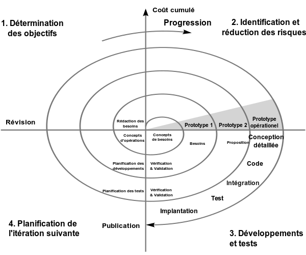

🔍 Description du modèle
Le modèle en spirale est une approche évolutive combinant développement itératif, prototypage et gestion proactive des risques. Chaque cycle de la spirale améliore progressivement le produit, en identifiant et gérant les risques associés.
🖼️ Schéma illustratif
⚙️ Phases du modèle en spirale
- Définition des objectifs : Identifier les besoins et les contraintes.
- Identification et gestion des risques : Analyse approfondie des risques et leur mitigation.
- Développement et validation : Création du produit et tests associés.
- Planification de l’itération suivante : Évaluation et décision d'une nouvelle spirale.
✅ Avantages
- Gestion efficace des risques tout au long du projet
- Grande flexibilité face aux évolutions des exigences
- Adapté aux projets complexes ou innovants nécessitant une analyse approfondie
❌ Inconvénients
- Complexité de gestion des cycles et des risques associés
- Coût potentiellement élevé à cause de la répétition des phases
- Exige des compétences avancées en gestion de projet et en analyse des risques
📋 Cas d’utilisation typiques
- Projets de grande taille et très complexes (aérospatial, militaire)
- Projets innovants ou à haute incertitude technologique
🧪 Rôle des tests dans ce modèle
Les tests sont intégrés à chaque itération pour vérifier que les risques identifiés sont correctement gérés et que la qualité reste constante tout au long des cycles.
- Tests de prototypes et tests exploratoires réguliers
- Tests d'intégration fréquents
- Tests système et d’acceptation à chaque cycle
- Tests axés sur les risques identifiés